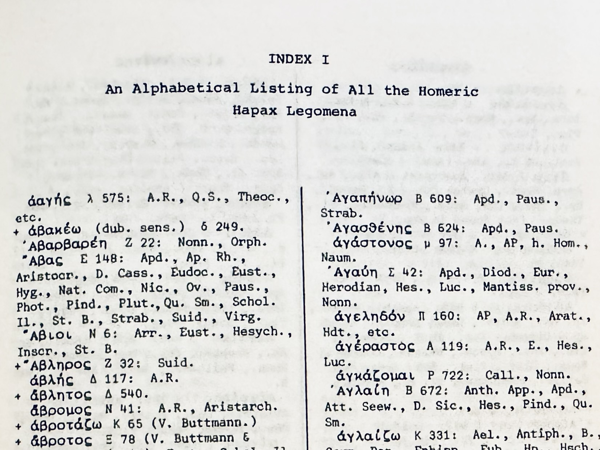
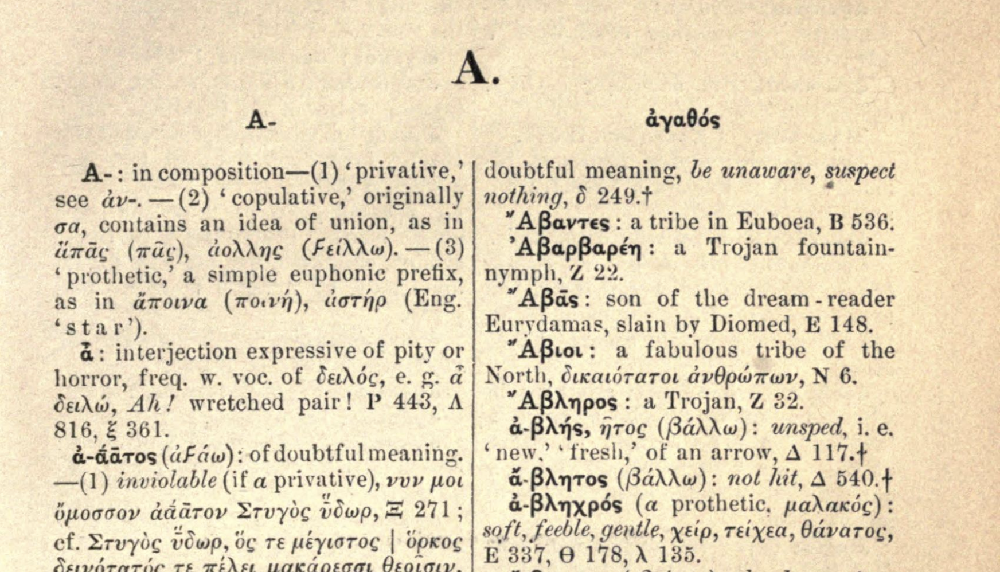

A data/code reconstruction of the four summary tables in M. M. Kumpf’s 1984 book Four Indices of the Homeric Hapax Legomena.
exploratory-philology
greek
text-analysis
treebanks
hapax-legomena
quantified-homer
Author
Patrick J. Burns
Published
July 31, 2026
The first in an Exploratory Philology series on Quantified Homer.
Homeric hapax legomena—words appearing only once in the epic text— have attracted attention since antiquity for being “exceptions to the norm,” as hapax compiler M. M. Kumpf writes. That is, in poems characterized in other respects by repetition, these words stand out specifically for their lack of repetition. G. P. Goold (1977, 31; cited in Kumpf 1984) calls these lexical individuals “words of zero formularity.” Kumpf’s 1984 book Four Indices of the Homeric Hapax Legomena(Kumpf 1984) collects and presents these “lone” words in a sort of printbound database, a lexicographical tour of Homeric unique diction. The structure of his book is as follows: 1. four indices (cf. Fig. 1) comprising (a) an alphabetical listing of the hapaxes; (b) a running-order list of the same; (c) the proper noun version of the first list; and (d) a list of Homeric hapaxes that are “Greek singularities,” i.e. words which remain unique to Homer even in later authors; followed by 2. four tables comprising (a) summary statistics for the Iliad; (b) the same for the Odyssey; (c) a comparison of the Iliad and Odyssey figures; and (d) longer stretches of the two works that do not contain a hapax. This post aims to reproduce the four tables from Kumpf’s work based on available digitized and annotated Homeric texts.

Figure 1: Fig. 1. Opening of Kumpf’s Index I (“An Alphabetical Listing of All the Homeric Hapax Legomena”).
The hardest part about reproducing Kumpf’s summary statistics is that hapax legomena despite their apparent clarity of definition—“words appearing only once in the epic text,” as above—are in fact notoriously difficult to define. What is a “word”? What do we mean by “once”? How are we defining the “epic text”? Kumpf’s introduction shows how Friedländer, Marouzeau, Fossum, and Geist, among others, had over time adopted slightly different definitions resulting in, unsurprisingly, slightly different counts. A prominent example from a resource familiar to readers of ancient Greek poetry. Autenreith’s A Homeric Dictionary(Autenreith 1891) marks hapaxes with a crux (see Fig. 2). Yet Kumpf notes “discrepancies” and other issues of definition, which are in part then a motivating factor in his own lexical compilation. For a full discussion of defining hapax legomena, I recommend consulting Kumpf’s introduction.

Figure 2: Fig. 2. Example with ἀβλής and ἄβλητος in Autenreith, A Homeric Dictionary, hapaxes marked by a final crux.
Two examples suffice here, useful since they reoccur in our computational definition of the problem in the code below. Take the example of the part-of-speech separation of adjectives and adverbs: the adjective ἕτερος is common in Homer, ἑτέρως is unique to Od. 1.234. Is ἑτέρως a hapax? Kumpf passes. Our dataset based on The Ancient Greek and Latin Dependency Treebank (Celano et al. 2014, v2.1) keeps the two words as two different lemmas—and so, two different lexical items by our definition—and so we label ἑτέρως as a hapax. Or take the example, or better the examples, of Ἀστύνοος in the Iliad? There is an Ἀστύνοος in Book 5 and a different Ἀστύνοος in Book 15, each appearing only once. Hapax? Autenreith counts two hapaxes, Kumpf excludes. We exclude as well—that homographic noun form appears more than once, and so dis legomena under our computational definition. Hapactic edge cases abound.
This is a blog post, not a full study and so I do little more here than point out the room for definitional error as opposed to fully remediating the issue. Perhaps I will return to more precise formalizations in future work. My goal for today is more modest: with the digitized texts and computational resources available for Homer, how far can we push towards reproducing a Kumpf-like study, doing so from the data up and using transparent, reproducible, and refactorable code? Again a modest goal for a blog post. I would strongly advise referring to Kumpf for anything resembling official hapax counts and published reference lists until these issues of definition (and computational definition) are more fully studied, addressed, and resolved.
I appreciate Kumpf’s own acknowledgment of definitional issues at the end of his introduction (Kumpf 1984, 17): “All the examples cited above perhaps reveal some of the difficulties encountered in deciding whether or not a word should be considered a Homeric hapax.” Accordingly, consider this a computational provocation, a post that notes issues of data and method, ultimately aiming for an improved future path: What more do we need in place to build a genuinely reproducible Kumpf from Homeric text data? In future posts, we will look further at the lists themselves—not just the summary statistics—as exactly this kind of step toward addressing (if never fully resolving!) the hapax definition issue.
NB: I leave aside for the moment Kumpf’s “Greek singularities” as this requires much more corpus-level data than the AGLDT provides. I will return to this topic in a future post using NLP annotations (lemmatization and POS tagging as well as named entity recognition) on a much larger collection of Ancient Greek text data.
Getting the Homeric data from AGLDT
First, download and parse the files for the Homeric text from the XML in the AGLDT v2.1.
import reimport unicodedataimport urllib.requestimport pandas as pdfrom lxml import etreetreebank_base = ('https://raw.githubusercontent.com/PerseusDL/treebank_data/master/v2.1/Greek/texts/')WORKS = {"iliad": "tlg0012.tlg001", "odyssey": "tlg0012.tlg002"}def get_words(uri):with urllib.request.urlopen(uri) as f: tree = etree.parse(f)return tree.getroot().xpath('.//word')words_by_work = { work: get_words(f'{treebank_base}{tlg}.perseus-grc1.tb.xml')for work, tlg in WORKS.items()}print("Number of words by work:")print({work: len(words) for work, words in words_by_work.items()})
Number of words by work:
{'iliad': 130479, 'odyssey': 105612}
Preprocessing AGLDT data
Here we handle a handful of AGLDT v2.1 that lemmas retain pre-Unicode noise (e.g. ~ for a circumflex) and other encoding/representation issues that if not addressed might surface as false hapaxes.
# Normalize AGLDT lemma encoding artifacts before counting# Standalone breathing-mark prefixes (separate visible chars)LEADING_STANDALONE = ('\u02BD', '\u02BC', '\u1FDE', '\u1FDD')# Combining breathing-mark prefixes (zero-width modifiers); when these# appear at the start of a lemma it is invariably an AGLDT damaged# proper-noun encoding (combining breathing + lowercase initial),# whose canonical form is title-cased.LEADING_COMBINING = ('\u0313', '\u0314')# Noisy lemmas to drop entirelyNOISE = {'???', '\u0313"\u0313'}def normalize_lemma(lemma):ifnot lemma or lemma in NOISE:returnNone combining_stripped =Falsewhile lemma and lemma[0] in LEADING_STANDALONE + LEADING_COMBINING:if lemma[0] in LEADING_COMBINING: combining_stripped =True lemma = lemma[1:]if'~'in lemma: lemma = lemma.replace('~', '\u0342') # combining circumflex lemma = unicodedata.normalize('NFC', lemma)if combining_stripped and lemma and lemma[0].islower(): lemma = lemma[0].upper() + lemma[1:]return lemma orNone
Get book/line data for each word, i.e. concordance
CITE_RE = re.compile(r":(\d+)(?:\.(\d+))?$")def parse_word(word, work):if word.attrib.get('postag', '').startswith('u'): # punctuationreturnNone# A small number of words (99 in the Iliad, 100 in the Odyssey) carry a# malformed *double* citation — two full URNs space-separated in one# cite attribute, e.g. Il. 6.451's words are all cited "...6.451# ...6.452". The first is the word's real line; the second looks like# export noise (words unambiguously belonging only to the second line,# e.g. Il. 6.452's κασιγνήτων, carry just one citation, not two) — take# the first, not whichever the regex happens to match last. first_cite = word.attrib.get('cite', '').split() m = CITE_RE.search(first_cite[0]) if first_cite elseNoneifnot m:returnNone lemma = normalize_lemma(word.attrib.get('lemma'))ifnot lemma:returnNonereturn {"work": work,"book": int(m.group(1)),"line": int(m.group(2)) if m.group(2) elseNone,"lemma": lemma,"form": word.attrib.get('form'), }words_df = pd.DataFrame([ rowfor work, words in words_by_work.items()for word in wordsif (row := parse_word(word, work)) isnotNone])target ="πολύτροπος"entry = words_df.loc[words_df["lemma"] == target].iloc[0].to_dict()if pd.notna(entry["line"]): entry["line"] =int(entry["line"]) # words_df stores line as float (NaN for book-only citations elsewhere in the column); this row has a real line, so cast it backentry
Note that our total line counts are close but not exact. For Book 18, Kumpf has 616 to our 617. The difference winds up being even more pronounced in the Odyssey (see below). A future post will look at such variation (and sometimes error) in available digitized texts.
Here are the first four rows of Kumpf’s Table I as a Pandas dataframe:
# Kumpf 1984, Table I (p. 203) — first four books only (Α–Δ), not the full# 24-book table.kumpf_table1 = pd.DataFrame({"book_letter": ["Α", "Β", "Γ", "Δ"],"hapax_kumpf": [48, 258, 45, 61],"proper_words_kumpf": [6, 187, 10, 17],"lines_kumpf": [611, 877, 461, 544],})kumpf_table1
book_letter
hapax_kumpf
proper_words_kumpf
lines_kumpf
0
Α
48
6
611
1
Β
258
187
877
2
Γ
45
10
461
3
Δ
61
17
544
As we could have guessed from our preceding discussion of definitions, our counts do not match Kumpf’s counts. Are they in the same ballpark? More or less… Kumpf shows 48/6 (hapaxes/proper hapaxes) for Il. 1, we show 52/6. For Il. 2, Kumpf has 258/187, we have 257/182. Ballpark, yes. Can I reproduce Kumpf’s counts exactly with the data available and the definitions I have adopted? Not quite.
Inspecting the data: ἑτέρως
As noted in the post introduction, Kumpf discusses adjective/adverb considerations for defining hapax legomena. Here is where our computational definition runs into the same issue, using ἑτέρως. Since AGLDT lemmatizes the adverb separately from the adjective, we count it as a hapax. Kumpf does not. Just one example of a definitional difference that leads to drift in hapax counts.
for lemma in ("ἕτερος", "ἑτέρως"): n =int(lemma_counts.get(lemma, 0))print(f"{lemma}: {n} occurrence(s), hapax={lemma in HAPAX_LEMMAS}")# where is the one ἑτέρως?words_df[words_df["lemma"] =="ἑτέρως"]
Before moving on to the second table, let’s also take a moment to inspect a case where we do have an “exact” match between the computer counts and the printed counts: let’s look at the “proper” hapaxes in Il. 3. It will be instructive to look a bit closer to ensure that not only do our counts match, but that the actual lemmas match as well.
from pyuca import Collatorcollator = Collator()def proper_hapax_lemmas(work, book): book_words = words_df[(words_df["work"] == work) & (words_df["book"] == book)] hapax = book_words[book_words["lemma"].isin(HAPAX_LEMMAS)] proper = hapax.loc[hapax["lemma"].str[0].str.isupper(), "lemma"].unique()returnsorted(proper, key=collator.sort_key)print("Proper hapax lemmas in Iliad Book 3 (AGLDT):")for i, lemma inenumerate(proper_hapax_lemmas("iliad", 3), 1):print(f'{i}: {lemma}')
Upon closer inspection, we find that this list largely, but not entirely, overlaps with Kumpf’s printed list of proper hapaxes (derived from Index II, p. 113–114). These nine match: Αἴθρη, Ἑλικάων, Θυμοίτης, Κρήτηθεν, Μύγδων, Ὀτρεύς, Οὐκαλέγων, Πιτθεύς, and Πυγμαῖοι. As for the tenth, we have Φρυγία in our list, Kumpf does not. Kumpf has Κρανάη, we do not. Let’s look closer…
# Κρανάη, Il. 3.445 What does AGLDT do with that line?words_df[(words_df["work"] =="iliad") & (words_df["book"] ==3) & (words_df["line"] ==445)]
work
book
line
lemma
form
85820
iliad
3
445.0
νῆσος
νήσῳ
85821
iliad
3
445.0
δέ
δ̓
85822
iliad
3
445.0
ἐν
ἐν
85823
iliad
3
445.0
κραναός
Κραναῇ
85824
iliad
3
445.0
μίγνυμι
ἐμίγην
85825
iliad
3
445.0
φιλότης
φιλότητι
85826
iliad
3
445.0
καί
καὶ
85827
iliad
3
445.0
εὐνή
εὐνῇ
Here we see that AGLDT has assigned this a lowercase lemma, i.e. not a proper noun, an interpretative difference: is it a “rocky” (i.e. from adj. κραναός) island or is it the island named Κρανάη? Considering the AGLDT form here is capitalized, i.e. Κραναῇ, I think we can safely say that this should have been retained as a proper noun hapax, kept separate from the adjective form which appears elsewhere in the Homeric texts (5x)…
# κραναός counts, if we remove the potentially mislabelled Κρανάηprint(f"κραναός: {lemma_counts.get('κραναός', 0) -1} occurrences corpus-wide")
κραναός: 5 occurrences corpus-wide
What about Φρυγία? Harder to say, since it doesn’t appear in the Kumpf lists (and so the reason for its absence is not explicit). But looking at what does surface from the AGLDT data, we can surmise that this has been excluded because of inconsistent lemma assignment in AGLDT. Two forms exist in the Iliad—Φρυγίην and Φρυγίη—and should likely be assigned to the same lemma. But this is not what we see in AGLDT and so we wind up with two hapaxes where Kumpf sees none.
Table II: Hapaxes in the Odyssey according to AGLDT
Here is a parallel reconstruction of Kumpf’s Table II, this time for the Odyssey. The same caveats about definitional differences and so differences in counts apply here as well.
We noted above that the Iliad total line counts are nearly identical between the two sources. The Odyssey is a different story. Here we have an annotation gap in the AGLDT data that accounts for the majority of the shortfall: Od. 9.521–535 and Od. 21.108–117. Further investigation is needed to understand better why these gaps exist in the treebanked texts. Future work in this space will look more closely at this issue.
Table IV: Looking at hapax-free passages
The fourth table in Kumpf’s book lists passages in the Homeric works which are 1. 100 lines or longer, and 2. contain no hapax legomena. Kumpf lists four such passages:
Od. 21.152–283 (131 lines)
Od. 4.645–774 (129 lines)
Od. 8.362–478 (116 lines)
Od. 2.87–192 (105 lines)
As we have already seen from the previous tables, enough discrepancies exist between Kumpf’s hapaxes and our AGLDT hapaxes that we are unlikely to find the same hapax gaps. So, what follows is simply a recasting of Kumpf’s method on the AGLDT data…
def find_long_hapax_gaps(work, book, min_len=100): book_words = words_df[ (words_df["work"] == work) & (words_df["book"] == book) & words_df["line"].notna() ] hapax_lines =set( book_words.loc[book_words["lemma"].isin(HAPAX_LEMMAS), "line"].astype(int) ) max_line =int(book_words["line"].max()) gaps, start = [], Nonefor line inrange(1, max_line +1):if line in hapax_lines:if start isnotNoneand line - start >= min_len: gaps.append((start, line -1, line - start)) start =Noneelif start isNone: start = lineif start isnotNoneand max_line +1- start >= min_len: gaps.append((start, max_line, max_line +1- start))return gapsour_table4 = pd.DataFrame( [ {"work": work, "book": book, "start_line": s, "end_line": e, "length": length}for work in ("iliad", "odyssey")for book insorted(words_df.loc[words_df["work"] == work, "book"].unique())for s, e, length in find_long_hapax_gaps(work, book) ])our_table4
work
book
start_line
end_line
length
0
odyssey
4
645
787
143
1
odyssey
17
33
169
137
Before wrapping up, let’s look briefly at our longest hapax-free run. We do return the same start line as Kumpf (4.645), but we “miss” Kumpf’s hapax ἐπαγγέλλω at 4.775. Here is a case where our data is sound and our method is sound. It is just a matter of “how are we defining the ‘epic text.’” Kumpf’s edition of Homer (Monro and Allen’s OCT) prints ἐπαγγείλῃσι, our edition (Murray’s Loeb) prints ἀπαγγείλῃσι. By AGLDT count, the lemma ἀπαγγέλλω appears 10 times in the epics and so our slightly longer hapax-free run is (again by that data definition) correct. But Kumpf’s hapax-free run is also “correct,” assuming his definition of the epic text. Text-critical decision as hapax arbiter.
print("Counts of ἀπαγγέλλω and ἐπαγγέλλω in the AGLDT corpus:")for lemma in ("ἀπαγγέλλω", "ἐπαγγέλλω"):print(f"{lemma}: {int(lemma_counts.get(lemma, 0))} occurrence(s)")
Counts of ἀπαγγέλλω and ἐπαγγέλλω in the AGLDT corpus:
ἀπαγγέλλω: 10 occurrence(s)
ἐπαγγέλλω: 0 occurrence(s)
With this we have a data-up, code-provided versions of Kumpf’s four summary tables. We cannot claim to have reproduced the work though. There still exist too many unexplained differences. But the computational work is framed. Not unlike Kumpf’s observations in his introduction, much of the difference comes down to definitions—so, a constant in computational and non-computational philological work. Elsewhere we see differences arise from text and/or annotation data quality. All of this demands further investigation. Since I am interested in not only reproducing Kumpf’s summary tables, but the indices themselves, we will have an excellent opportunity with that exercise to dig deeper into Homeric data, definition, and more.
References
Autenreith, Georg, ed. 1891. A Homeric Dictionary for Schools and Colleges. Harper & Brothers.
Celano, Giuseppe G A, Gregory Crane, Bridget Almas, and et al. 2014. “The Ancient Greek and Latin Dependency Treebank v.2.1.”https://perseusdl.github.io/treebank_data/.
Goold, G. P. 1977. “The Nature of Homeric Composition.”Illinois Classical Studies 2: 1–34.
Kumpf, Michael M. 1984. Four Indices of the Homeric Hapax Legomena: Together with Statistical Data. Olms.